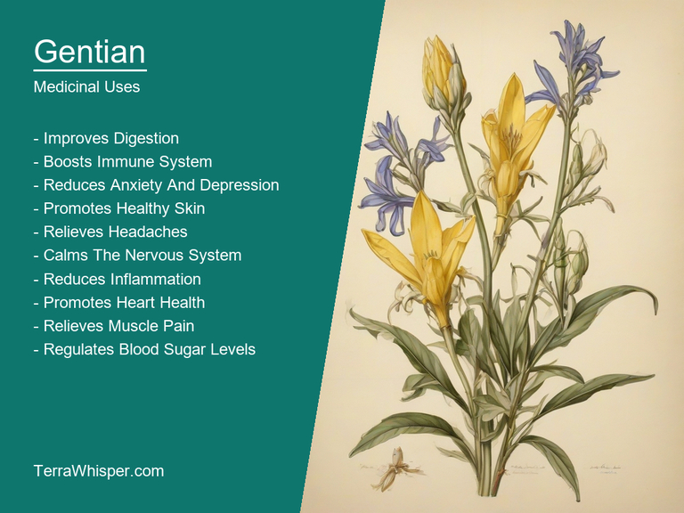
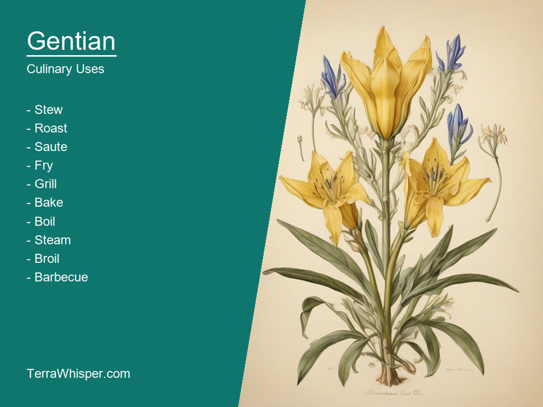
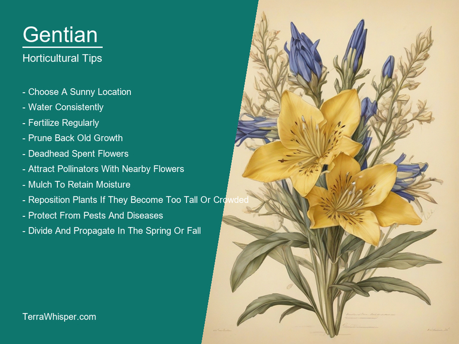
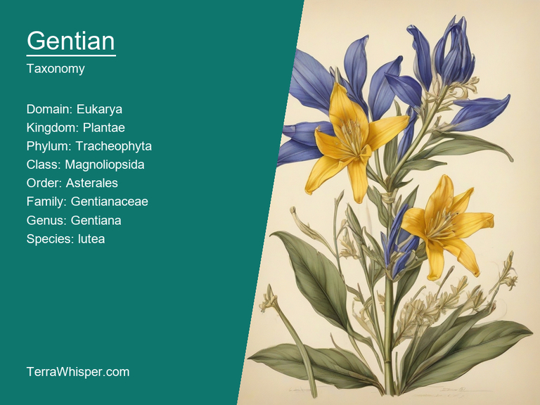
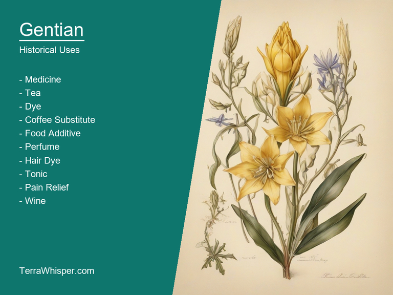

What To Know Before Using Gentian (Gentiana Lutea)

Gentian, scientifically known as Gentiana lutea, is a flowering plant that not only exhibits therapeutic properties but also serves culinary purposes. The roots of this plant are used to produce Gentian root extracts, which are well-known in alternative medicine for their ability to treat various digestive issues such as stomach upsets and indigestion. Additionally, its strong bitter taste has earned it the title 'King of Bitter Herbs', making it an important flavoring agent in various beverages like bitters, liqueurs, and herbal teas. The yellowish-orange flowers of this plant are not only visually appealing but also provide a beautiful contrast to their dark green leaves.
In the horticultural arena, Gentian's aesthetic appeal makes it an excellent choice as both container plants and garden specimens. It thrives in well-drained soil in partly sunny or shady environments; providing support such as wooden stakes helps in enhancing its growth by minimizing possible bending of the stem due to its upright nature. Gentian flowers, with their unique trumpet-shaped blossoms, have the ability to attract pollinators like bees and butterflies while contributing to the overall charm of any garden or landscape.
Lastly, botanically, Gentiana lutea belongs to the Gentianaceae family and is native to Europe's mountainous regions. It has a long history in herbal medicine and has been used since ancient times for its healing properties. Additionally, its cultural significance can be traced back to medieval European tradition, where it was considered an emblem of integrity and purity. The plant's Latin name 'Gentiana' is believed to derive from the Italian term Gentile, which means "well-born." Throughout history, Gentian has been used in various rituals and ceremonies as a symbol of good fortune and prosperity.
In this article, you will discover what are the medicinal and culinary uses of gentian. Then, you'll learn how to cultivate it, what is its botanical profile, and how it was used historically.
What Are The Medicinal Uses Of Gentian?
Gentian (Gentiana lutea) has many health benefits, such as aiding in digestive, liver and respiratory issues. This herb is known for its bitter taste due to its alkaloid constituents, which stimulate the production of gastric juices and bile. By increasing these essential bodily fluids, it helps improve digestion, prevent bloating, and support a healthy appetite. Gentian also has antioxidant effects which protect the body from free radicals that cause oxidative stress and damage to cells, potentially leading to chronic diseases.
The following illustration lists the most important uses of gentian in medicine.

The medicinal constituents found in Gentian include alkaloids, volatile oils, resins, tannins, flavonoids, glycosides, and other compounds. It has notable antioxidant properties thanks to the presence of bioactive flavonoids like rutin, quercetin, kaempferol, and gentiopicrin. Additionally, its bitter alkaloid components, such as amarogentin and gentianine, contribute to its digestive-supporting benefits by stimulating gastric secretions and bile production.
The most commonly used parts of the Gentian plant for medicinal purposes include roots, leaves, and flowers. Roots are generally used to prepare herbal infusions for their potent digestive properties. Leaves are also made into an herbal tea or tincture, which may offer some of the same benefits as Gentiana's roots. The flowering tops can be dried and steeped to create a gentle tea or astringent-like tonic. These various preparations provide relief from gastrointestinal issues, liver problems, and respiratory difficulties.
While Gentian is generally considered safe for most people when taken at the appropriate doses, it may cause some side effects for sensitive individuals. Some potential adverse reactions include nausea, vomiting, diarrhea, stomach upset, allergic reactions, or headaches. Additionally, pregnant women and those with certain medical conditions should consult a healthcare professional before consuming Gentian products to ensure its safety.
To minimize any risk and optimize the benefits of using Gentian, it's essential to take appropriate precautions. It is advisable to start with smaller doses to gauge tolerance levels and gradually increase them based on individual needs. Avoid taking it for an extended period without consulting a healthcare professional, as long-term use may lead to increased risk of side effects. Moreover, be cautious about the source of your Gentian supplements or herbal preparations to ensure quality and safety.
What Are The Culinary Uses Of Gentian?
Gentian (Gentiana lutea) is a flowering plant with culinary uses, particularly in the realm of digestive health. It has been used for centuries as a bitter herb to stimulate appetite and promote proper digestion. Its use dates back to ancient times, when it was incorporated into traditional remedies across various cultures.
The following illustration lists the most common uses of gentian for culinary purposes.

The flavor profile of Gentian is characterized by its distinctive bitterness that leaves an aftertaste in the mouth. This unique taste has been found helpful for combating indigestion, heartburn, and other gastrointestinal issues. It also plays a key role in balancing out flavors when added to various dishes or beverages.
The edible parts of Gentian include its flowers and roots. The root is the most commonly used part for culinary purposes due to its high concentration of beneficial properties like bitterness, which directly relates to digestive aids. Gentian roots can either be consumed raw or cooked in various dishes, including soups, stews, teas, and even as a flavoring agent in herbal beverages such as liqueurs.
Inculcating the bitter taste of Gentian into culinary creations requires careful consideration for appropriate combinations with other flavors. Its potency can be balanced out by using it sparingly or complementing with sweeter ingredients like honey, fruits, and vegetables. Additionally, Gentian pairs well with herbs such as rosemary, thyme, sage, and mint. Experimentation with various ratios is key to creating harmonious flavors in any dish or drink incorporating Gentian.
While Gentian has numerous health benefits associated with its culinary uses, it's essential to be mindful of potential side effects. Some individuals might experience nausea, vomiting, diarrhea, and other gastrointestinal discomfort when consuming large amounts of Gentian. Pregnant or lactating women should avoid using it due to its possible harmful effects on the fetus or nursing baby. To ensure safety, it's advised to consult a healthcare professional before incorporating Gentian into your diet.
How To Cultivate Gentian In Your Garden?
Gentian (Gentiana lutea), commonly known as yellow gentian, is a perennial flowering herb belonging to the Gentianaceae family that thrives well under certain growth requirements such as sunny locations with good air circulation and well-drained soil rich in organic matter. The ideal pH level for this plant lies between 5.5 to 7.0. Yellow gentians can grow from one up to a few feet tall, with broadly elliptic leaves, yellow flowers that bloom during late spring to midsummer, and hardened stem-like rhizomes.
The following illustration lists the most important tips to cutlitvate gentian.

Planting tips for Gentian should focus on selecting healthy plants, spacing them properly, and preparing the soil appropriately. For starters, purchase robust young plants from a reputable nursery. It's important to provide ample space between each plant - usually around 18 inches apart. Prepare the soil by loosening it, removing weeds and other debris, and incorporating organic matter such as compost or well-rotted manure to improve drainage and nutrient content.
Caring tips for Gentian involve offering necessary sunlight, water, and fertilization to ensure healthy growth. Ensure that your plants get ample sunlight – at least 6 hours a day is ideal. Watering should be regular but not excessive - once or twice a week would do; however, adjust according to weather conditions as the plant can suffer from root rot if overwatered. Apply a balanced fertilizer in spring and early summer – try using a slow-release type that provides nutrients gradually over time.
Harvesting tips for Gentian involve understanding when to collect the flowers, how to do so, and preservation techniques for dried or fresh use. To determine the right harvesting time, monitor the plant's growth and keep track of flower blooming; once it's fully matured, you can carefully cut the stems with a sharp pair of scissors. Gather these just as flowers are fading and store them in a cool, dry place away from direct sunlight to preserve their color and freshness. Alternatively, they can be dried for longer shelf-life.
Pests and diseases affecting Gentian include root rot, rust, and aphids. Root rot occurs due to excessive moisture and poor soil conditions, so proper soil drainage and management are crucial in preventing it. Rust, caused by fungal disease, results in brown spots on leaves that gradually cover the whole leaf surface. Aphids, tiny insects that feed on plant sap, can damage leaves and stems. To manage these issues, regularly monitor plants, maintain good growing conditions, and use organic pest control methods like insecticidal soap or neem oil as necessary.
What Is The Botanical Profile Of Gentian?
Gentian, with botanical name Gentiana lutea, belongs to the domain Eukaryota, kingdom Plantae, phylum Magnoliophyta, class Magnoliopsida, order Gentianales, family Gentianaceae, and genus Gentiana. Common names for this plant include Yellow Gentian, Feverfew, and Bitterwort.
The following illustration display the botanical profile of gentian.

The main variants of Gentiana lutea are G. lutea var. altior (taller plants), G. lutea var. latifolia (large-leaved), and G. lutea var. villosa (hairy). While each type has slight differences in height, leaf size, and hairiness, they all share the same unique botanical characteristics of this species.
Gentiana lutea boasts an elegant and distinctive appearance with its tall, straight stems that can reach up to three feet in height. The plant features large, deep green leaves with a pointed oval shape on stems and purple flowers, creating striking contrasts throughout the plant.
Gentian is native to Europe, primarily found in mountainous areas in countries such as Austria, France, Germany, Italy, Portugal, Slovenia, Switzerland, and Spain. It thrives in well-drained soils and cooler climates at elevations of around 2000 meters above sea level. The plant can also be cultivated in other parts of the world with similar growing conditions.
Gentiana lutea's life cycle involves a biennial growth pattern, meaning it takes two years to complete its entire life cycle. In the first year, the plant will form an herbaceous rosette consisting of leaves and a basal rosette before eventually developing a tall flowering stem in the second year. Once matured, the flowers attract pollinators like bees, butterflies, and moths, leading to seed production and ultimately dispersal for the next generation.
What Are The Historical Uses Of Gentian?
The word "Gentian" originates from Greek root 'gentia', meaning yellowish-green colour of this particular plant species called Gentiana lutea or Yellow gentians which belong to a group named after its generic name, the Genatinae family within the Plantae kingdom. In addition to their bright color and beautiful flowers (resembling small sunflowers), these plants are also known for being rich in phytochemicals like iridoid glycosides which give them therapeutic properties; that includes antioxidant, anti-inflammatory actions making it a popular choice among herbalists and healers throughout history.
The following illustration lists the most well known historical uses of gentian.

Culturally significant due to its use as both ornamental addition alongside medicinal purposes for various cultures around the world Gentiana lutea is seen widely used in European countries like France, Germany & Sweden specifically adorning gardens while being appreciated within folk traditions mainly known through herbal medicine remedies.
Myths and legends related to gentians vary from culture-to-culture but are rooted primarily around the idea of its healing properties. The storyline involving gods or demiurges such as in ancient Greek mythology where Zeus, king of all God's gave this plant power upon wishful observation also plays a significant role; another popular legend is about how it turned yellow color just due to King Solomon praying for his people's health.
In literature references can be found across various literary works spanning different time periods and cultures – an early mention comes in 'Hortus Sanitatis' (15th-century Latin treatise on medicinal plants), describing their use as a curative plant against fevers while another reference came when English botanist, Sir Hans Sloane wrote about Gentianaceae family which encompassed the genus "Gentiana". More prominent characters include Jane Austen's 'Emma', where it is mentioned in relation to gardening purposes at an estate called Hartfield; likewise there have been numerous poems like A.H Clarkes poem titled ‘Yellow Gently' written particularly emphasizing its therapeutic properties and symbolism linked with hope or comfort amidst despair.
Over history Gentians had multiple folkloristic uses too – these varied across cultural, economic conditions - sometimes serving medicinally used for treating digestive issues like heartburns & stomach aches but also were believed to be useful in purifying water thus having application linked into our drinking waters treatment systems. Additionally they have been employed as food coloring dyes due their vibrant hues while its use spanning across different cultures indicate potential medicinal or religious significance too adding mystery yet further reinforcing the cultural value it carries with humanity from early civilizations up until today's times .